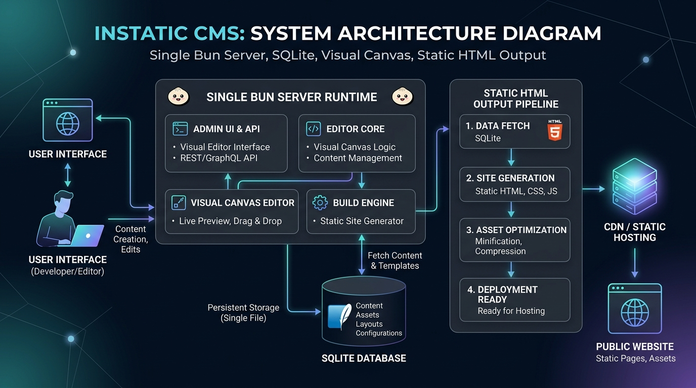

Instatic CMS: The Complete Technical Guide
TL;DR: Instatic CMS is an open-source, self-hosted visual website builder powered by Bun and SQLite/Postgres. It compiles visual canvas designs directly into zero-dependency static HTML and CSS files, giving developers Webflow-like design capabilities with zero hosting lock-in or dynamic server costs.
- 1. What is Instatic CMS?
- 2. Why It Matters: Solving the CMS Dilemma
- 3. System Architecture & Tech Stack
- 4. Visual Canvas Engine
- 5. Built-In Features (Forms, Plugins, AI Agent)
- 6. Deployment Options (Docker, Railway, Render)
- 7. Performance Benchmarks
- 8. Comparisons & Alternatives
- 9. Limitations & Trade-offs
- 10. Getting Started with Instatic
- 11. Frequently Asked Questions (FAQ)
- 12. Summary & Recommendations
1. What is Instatic CMS?
Instatic CMS is an open-source, self-hosted visual website builder powered by a Bun server that compiles visual canvas designs directly into static HTML and CSS files.
Designed for developers and agencies who want Webflow-like visual drag-and-drop design control without accepting SaaS pricing tiers or proprietary hosting lock-in, Instatic bridges the gap between headless CMS platforms and visual site builders. Published sites run as pure static files with 0 ms server execution overhead.
2. Why It Matters: Solving the CMS Dilemma
Modern web development has long forced a compromise between two extremes:
- Proprietary SaaS Builders (Webflow, Framer): Outstanding visual canvas editors, but high monthly fees ($29–$400+/mo), zero database self-hosting, and mandatory platform lock-in.
- Dynamic CMS Monoliths (WordPress, Drupal): Open source and self-hosted, but plagued by heavy PHP execution, security patch cycles, slow database queries, and complex caching plugins.
- Headless Jamstack (Astro, Next.js + Sanity): Ultra-fast static output, but requiring developer code edits for every layout tweak and lacking visual canvas editing for non-technical teammates.
Instatic CMS resolves this trade-off by combining a self-hosted visual canvas editor with a pure static file compiler.
3. System Architecture & Tech Stack

3.1. Single Bun Process Architecture
Instatic executes as a single Bun runtime process. Bun provides ultra-fast startup times, native TypeScript execution, built-in SQLite bindings, and fast file I/O operations.
3.2. Core Framework Design Tokens
Integrated directly into the editor is the Core Framework design token engine. It generates CSS custom properties for fluid typography scales, responsive spacing rules, and color palettes from a single centralized configuration panel.
4. Visual Canvas Engine
The visual editor renders a real DOM tree inside an iframe canvas, letting you inspect and edit HTML elements with a visual panel. Styles map directly to CSS variables generated by Core Framework.
- Responsive Breakpoints: Edit layout rules across Desktop, Tablet, and Mobile viewport modes visually.
- Component Reusability: Save DOM subtrees as master components with prop overrides.
- Clean Source Export: Output produces semantic HTML5 elements without wrapper bloat or builder-specific classes.
5. Built-In Features
5.1. Form Submissions & Storage
Forms on published static sites post to Instatic's lightweight forms endpoint, storing submissions in SQLite/Postgres with webhook triggers for email or Discord notifications.
5.2. Plugin System & AI Agent (MCP)
Instatic includes an extensibility SDK and a built-in AI assistant via Model Context Protocol (MCP). Connect OpenAI, Claude, or local Ollama instances to generate, edit, or refactor visual DOM nodes directly on the canvas.
6. Deployment Options
6.1. Docker & Docker Compose
# Docker Compose deployment with SQLite
services:
app:
image: corebunch/instatic:latest
ports:
- "3000:3000"
environment:
- NODE_ENV=production
- DATABASE_URL=file:/app/data/instatic.db
volumes:
- ./instatic-data:/app/data6.2. Managed Railway or Render Deployment
Deploy to Railway or Render in minutes using the official Dockerfile. Connect a persistent volume for SQLite or set DATABASE_URL to a managed PostgreSQL cluster.
7. Performance Benchmarks
Published static sites achieve 100/100 Google Lighthouse scores by default. Because no Node.js or PHP runtime executes on page load, Time to First Byte (TTFB) is bounded only by your CDN edge network latency (<20 ms globally on Cloudflare Pages).
8. Comparisons & Alternatives
| Feature / Metric | Instatic CMS | Webflow | WordPress |
|---|---|---|---|
| Hosting Model | Self-hosted static HTML | Proprietary cloud SaaS | Self-hosted dynamic PHP + MySQL |
| Runtime Overhead | 0 ms (Static CDN delivery) | Dynamic SaaS platform | Server execution on every request |
| Monthly Cost | $0 – $5 / month | $14 – $39+ / month | $5 – $25+ / month + plugins |
| Vendor Lock-in | Zero (Pure HTML/CSS output) | High (Closed ecosystem) | Low (Open source PHP) |
| Design Token Engine | Built-in Core Framework | Custom CSS properties | Requires third-party page builders |
9. Limitations & Trade-offs
- Younger Ecosystem: Fewer pre-built third-party plugins compared to WordPress's 60,000+ extensions.
- Pre-1.0 API Evolution: Active v0.0.x development means schema migrations should be backed up before upgrading editor releases.
- Static Focus: Fully dynamic membership portals require client-side SDK integration (e.g. Supabase Auth or Clerk).
10. Getting Started with Instatic
# Quickstart CLI commands
git clone https://github.com/corebunch/instatic.git
cd instatic
bun install
bun run devOpen http://localhost:5173 in your browser to launch the visual editor wizard.
11. Frequently Asked Questions (FAQ)
Is Instatic CMS free?
Instatic is MIT licensed with no paid tiers, no open-core restrictions, and no contact-sales requirements. Hosting costs depend on your deployment choice: $0 on your own VPS, ~$5/month on Railway with SQLite, or free on Cloudflare Pages for static output.
How does Instatic compare to Webflow?
Instatic provides a similar visual canvas editor but runs self-hosted and outputs clean static HTML without builder JavaScript. Webflow charges $16–36/month and locks sites into its proprietary platform. Instatic has zero platform fees and no vendor lock-in.
Can Instatic replace WordPress?
For sites that need visual editing, static output, and self-hosted control, Instatic replaces WordPress with a lighter, more secure architecture. Instatic is better for sites where performance and security matter more than plugin breadth.
Is Instatic good for SEO?
Instatic outputs clean semantic HTML with no framework runtime, producing fast page loads and readable source code for search crawlers. You control meta tags, structured data, and clean static URL paths.
What database does Instatic use?
Instatic supports SQLite (default, zero-config) and PostgreSQL (for teams and managed backups). The database choice is set via the DATABASE_URL environment variable across Docker and cloud deployments.
12. Summary & Recommendations
- Self-Host for Zero Lock-in: Use Instatic Docker containers to retain 100% ownership of your site designs and content databases.
- Deploy Static for Maximum Speed: Export pure HTML/CSS to free global static CDNs like Cloudflare Pages.
- Leverage Core Framework: Define fluid typography and spacing variables in the design token engine for consistent responsive layouts.